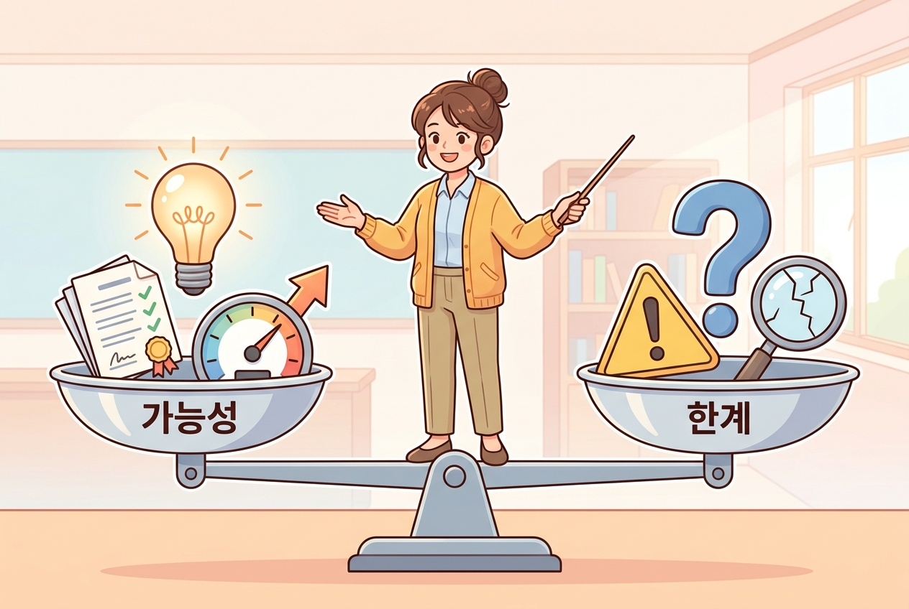

🎯 이 장에서 배우는 것¶
- AI 활용의 실질적 효과와 부작용을 균형 있게 설명할 수 있다
- AI가 생성한 정보를 비판적으로 점검하는 기준을 세울 수 있다
- AI를 맹신하지도 두려워하지도 않는 자신만의 관점을 형성할 수 있다
💡 왜 이걸 배우나요?¶
1차시에서 AI와 첫 대화를 나눠보셨죠? 그런데 혹시 이런 경험 있으셨나요?
"AI가 알려준 참고문헌을 찾아봤는데… 존재하지 않는 책이었어요." 😱
AI를 교실에 도입하려면, 잘하는 것과 못하는 것을 정확히 아는 게 먼저입니다. 도구의 설명서를 읽지 않고 쓰면 사고가 나듯, AI도 마찬가지입니다.
📚 핵심 개념¶
개념: AI의 양면성 — 유능한 인턴의 비유 🧑💼¶
1. 비유로 시작해볼까요?
AI는 마치 매우 유능하지만 경험 없는 신입 인턴과 같습니다. 자료 정리, 초안 작성, 아이디어 브레인스토밍은 놀라울 만큼 빠르지만, 사실 확인 없이 자신 있게 틀린 말을 하기도 합니다. 이 인턴의 보고서를 그대로 교장 선생님께 올리시겠어요? 당연히 검토 후에 올리시겠죠.
2. 정확한 정의
| 구분 | AI가 잘하는 것 ✅ | AI가 못하는 것 ❌ |
|---|---|---|
| 정보 | 방대한 텍스트 요약·정리 | 사실 여부 보장 (할루시네이션 발생) |
| 생성 | 다양한 초안·예시 빠르게 생성 | 맥락에 맞는 교육적 판단 |
| 소통 | 자연스러운 문장 생성 | 학생의 감정·상황 읽기 |
| 공정 | 일관된 기준 적용 | 내재된 편향 스스로 인식 |
할루시네이션(Hallucination): AI가 사실이 아닌 내용을 마치 진짜처럼 자신 있게 만들어내는 현상. "그럴듯한 거짓말"이라고 생각하시면 됩니다.
3. 교실 속 사례로 확인
선생님: "을사조약에 대한 수행평가 채점 기준표를 만들어줘"
AI: (깔끔한 루브릭 생성 ✅)
선생님: "을사조약 당시 고종이 헤이그에 파견한 특사 5명의 이름을 알려줘"
AI: "이상설, 이준, 이위종, 김윤식, 박영효입니다" ❌
→ 실제 특사는 3명! 김윤식과 박영효는 관련 없는 인물

이 구조를 한눈에 정리하면 다음과 같습니다:
☝️ 핵심 메시지: AI는 '생성'을 하고, 교사는 '판단'을 합니다. 이 역할 분담이 AI 활용의 출발점입니다.
🔨 따라하기 / 활동¶
Step 1: AI에게 일부러 "함정 질문" 해보기 🕳️¶
지금 바로 ChatGPT나 Gemini를 열고, 여러분이 전문가인 영역에서 세부 사실을 물어보세요.
예시 프롬프트: "2015 개정 교육과정에서 [본인 담당 과목]의 성취기준 중 [특정 단원]에 해당하는 것을 모두 나열해줘"
👉 AI의 답변을 실제 교육과정 문서와 비교해보세요. 어디가 맞고 어디가 틀렸나요?
Step 2: 나만의 AI 활용 기준 세우기 ✍️¶
아래 문장을 완성해보세요:
"나는 AI를 _____ 에는 적극 활용하되, _____ 에는 반드시 직접 확인하겠다."
(예: "수업 아이디어 브레인스토밍"에는 적극 활용하되, "학생 평가 점수 산출"에는 반드시 직접 확인하겠다.)
⚠️ 주의할 점¶
- "AI가 말했으니 맞겠지"는 위험합니다 — 특히 역사적 사실, 법령, 통계 수치는 반드시 원본 출처에서 교차 검증하세요.
- 학생들에게도 이 한계를 가르쳐야 합니다 — AI 리터러시의 핵심은 "의심하고 확인하는 습관"입니다. 선생님이 먼저 모범을 보여주세요.
✅ 점검하기¶
1. AI의 '할루시네이션'이란 무엇인가요?
정답 확인
AI가 사실이 아닌 내용을 마치 사실인 것처럼 자신 있게 생성하는 현상입니다. "그럴듯한 거짓말"이라고도 합니다.2. AI가 생성한 수업자료를 교실에서 바로 사용해도 될까요?
정답 확인
아닙니다. 반드시 교사가 정확성, 적절성, 편향성을 검토한 후 사용해야 합니다. AI는 '생성'을, 교사는 '판단'을 담당합니다.3. AI 활용에서 교사만이 할 수 있는 역할은 무엇일까요?
정답 확인
학생의 감정과 상황을 읽는 것, 교육적 맥락에 맞는 판단, 윤리적 의사결정 등은 교사만이 할 수 있는 고유한 역할입니다.📝 인터랙티브 퀴즈¶
1. AI가 존재하지 않는 참고문헌을 마치 실제처럼 제시하는 현상을 무엇이라 하나요?
2. AI 활용에서 교사의 가장 중요한 역할은 무엇인가요?
3. AI 활용 시 특히 교차 검증이 필요한 영역이 아닌 것은?
✏️ 서술형 문제¶
"AI 시대에 교사만이 할 수 있는 일"이 무엇이라고 생각하시나요? 본인의 교과와 연결하여 한두 문장으로 적어보세요.
예시 답변
"국어 수업에서 학생이 쓴 글의 기술적 완성도는 AI도 평가할 수 있지만, 그 글에 담긴 학생의 성장과 고민을 읽어내고 따뜻한 피드백을 주는 것은 교사만이 할 수 있는 일이라고 생각합니다."⏱️ 이 차시 수업 흐름¶
| 단계 | 활동 | 시간 |
|---|---|---|
| 도입 | AI의 양면성 비유 이해하기 | 3분 |
| 활동 | AI에게 함정 질문 → 결과 비교 | 4분 |
| 정리 | 나만의 활용 기준 세우기 + 퀴즈 | 3분 |
🔗 다음 장 미리보기¶
3차시에서는 AI에게 똑똑하게 질문하는 법, 즉 프롬프트 엔지니어링의 기초를 배웁니다. 같은 AI라도 어떻게 물어보느냐에 따라 답의 품질이 완전히 달라진다는 것을 직접 체험해보실 거예요! 🎯